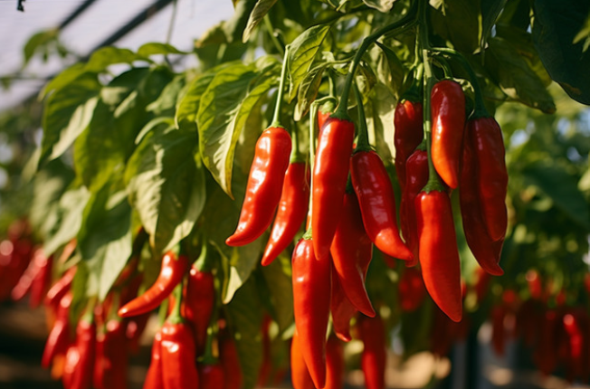
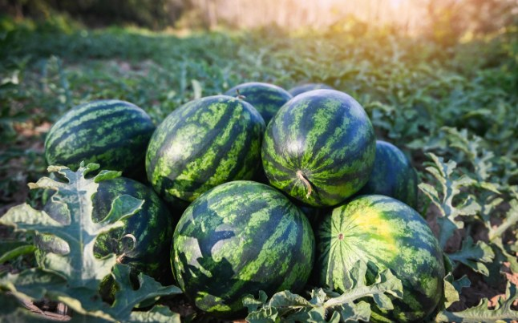
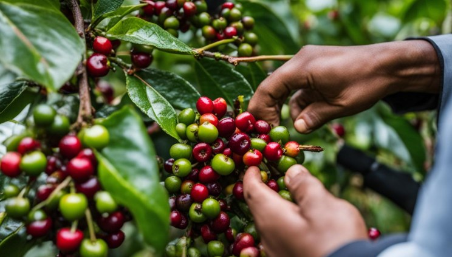

Growing Fresh Produce for a Better Rwanda.
AgriBiz and Social CBC is an agriculture company focused on growing fresh vegetables and fruits, built for consistency, care and long-term value from our fields to your table.
A modern agricultural company rooted in Rwanda
We are a Rwanda-based agricultural company focused on fresh produce and long-term value creation.
Our work centres on growing quality vegetables and fruits for local markets, households and institutions, with an approach built for consistency, freshness and care from field to buyer. As we grow, we see room to build further into Rwanda’s agricultural value chain but fresh vegetables and fruits will always be at the heart of what we do.
Mission
To produce quality agricultural products, create value for customers and contribute to a stronger and more sustainable food system in Rwanda.
Vision
To become a trusted and growing agricultural company known for quality produce, responsible farming and reliable partnerships.
What guides how we grow
Quality
Care in how crops are grown, handled and prepared for buyers.
Integrity
Honest dealings with customers, partners and communities.
Reliability
Consistent supply and dependable communication, harvest after harvest.
Innovation
Open to better, more practical ways of farming as we grow.
Sustainability
Farming practices with the long term of the land in mind.
Community
Contributing to a stronger food system for the people around us.
Vegetables and fruits, grown with care
Fresh produce is at the centre of everything we do. Switch between our growing groups below.

Our primary focus
Vegetable farming is the core of what we do the main registered activity behind AgriBiz and Social CBC. We grow a range of everyday vegetables for local markets, households and institutions, with care given to consistent quality and careful handling from field to buyer.

Building alongside our vegetables
Fruit production supports and diversifies our growing business. We cultivate a range of fruit crops suited to Rwanda’s climate, from fast-fruiting varieties to longer-term tree crops, adding steady value alongside our core vegetable farming.

Part of What We Grow
Alongside vegetables and fruits, we also grow coffee. It's a crop we know how to grow well hand-picked and handled with the same attention as the rest of our produce.
Built for the people who move fresh produce
We’re building relationships with the people and businesses who share our commitment to fresh, quality produce from single households to larger buyers.
Retailers & Markets
Fresh produce for shops, stalls and local markets.
Restaurants & Hotels
Reliable produce for kitchens that need consistency.
Institutions & Schools
Steady supply for canteens and larger kitchens.
Cooperatives & Distributors
Partnering to move fresh produce further.
Looking for fresh produce or an agricultural partner? Talk to AgriBiz and let’s grow together.
Become a PartnerLet’s grow together
Looking for fresh produce or an agricultural partner? Talk to AgriBiz our team is glad to hear from customers, buyers and partners alike.